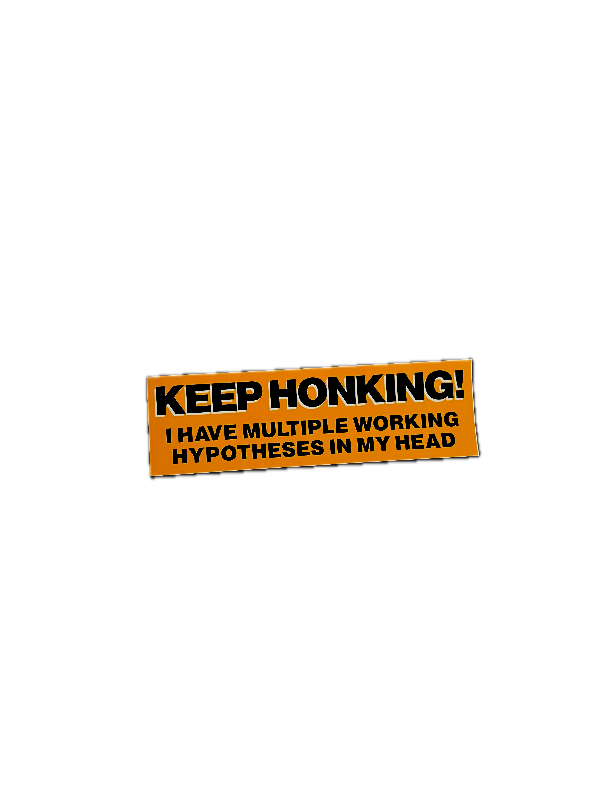

Archive


On the diet diversity of wild bumble bees


Perennial Plants of the Rockies


Pediocactus Season One

Multiple Working Hypotheses
Archive

"Death is certain; the timing of death is uncertain" (Buddhist proverb).
A fundamental component of biology is how long organisms live. This is because an organism's longevity is related to virtually all aspects of its ecology and evolution, from the ability to withstand environmental perturbations, to patterns of age-specific growth, survival and reproduction. Despite the importance of longevity—and for all its apparent simplicity—for many species it is unknown, imprecise, or misunderstood.
We are focusing on plants to ask a series of basic questions about ecological longevity: How long do perennial plants live? How best do we quantify plant lifespan? And what ecological and evolutionary factors contribute to variation in plant lifespan? To address these questions, we are using a plant demography database which includes several thousand matrix population models to calculate lifespan for 498 plant species that vary considerably in life history from across the globe. A central feature of this research is developing analytical tools to summarize key aspects of plant life history to effectively and succinctly relate different life history strategies to longevity.